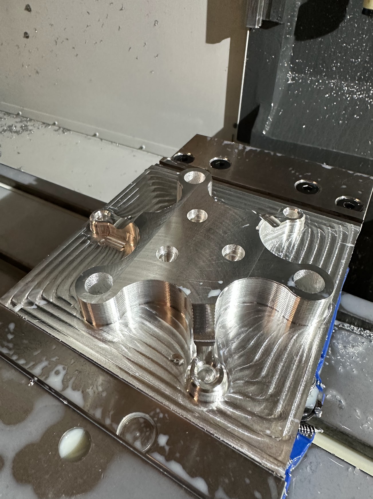
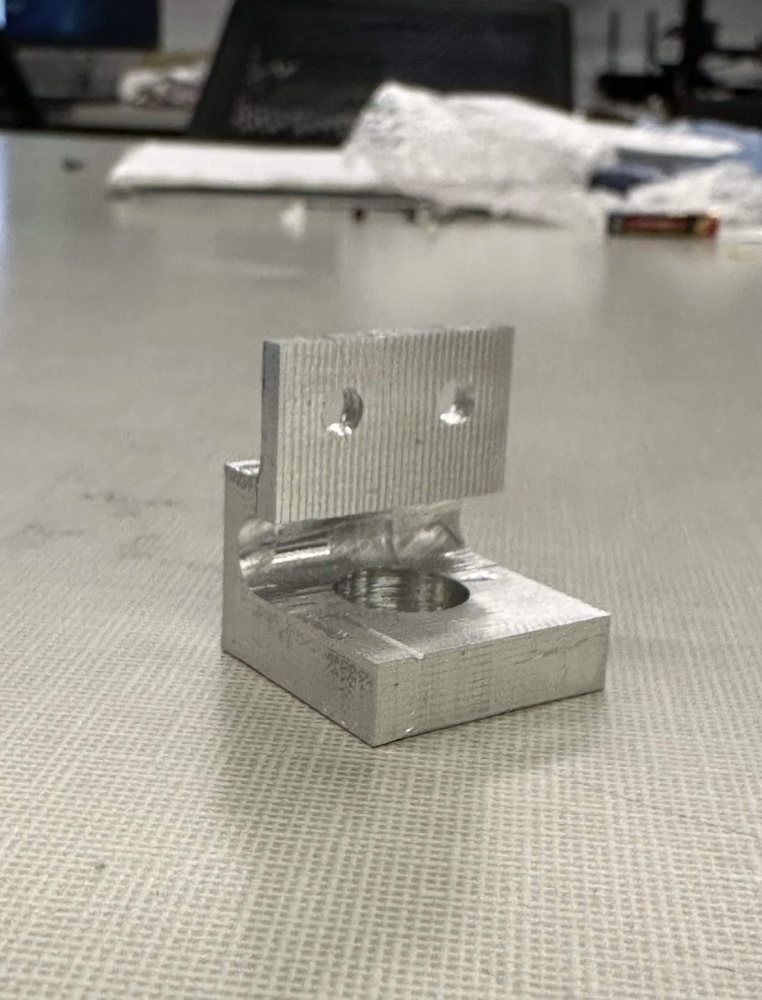
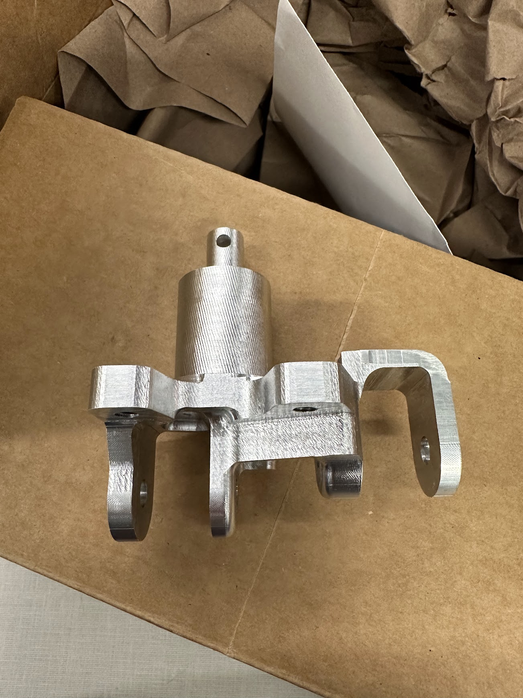
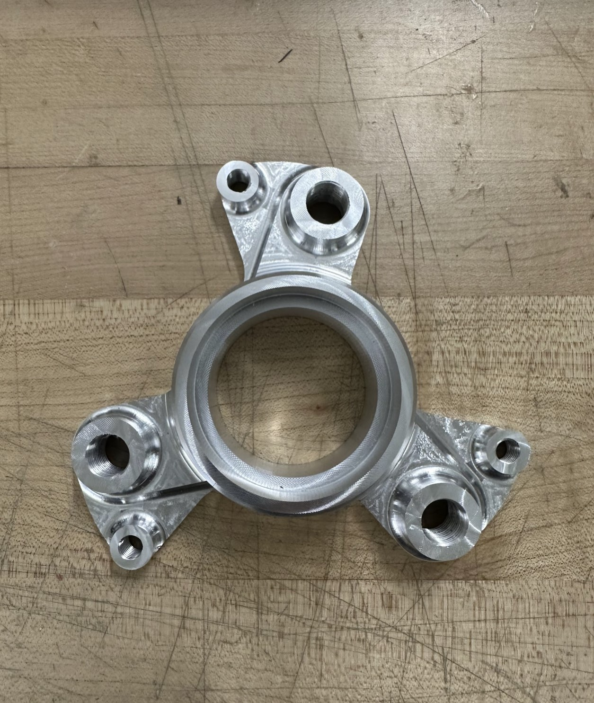
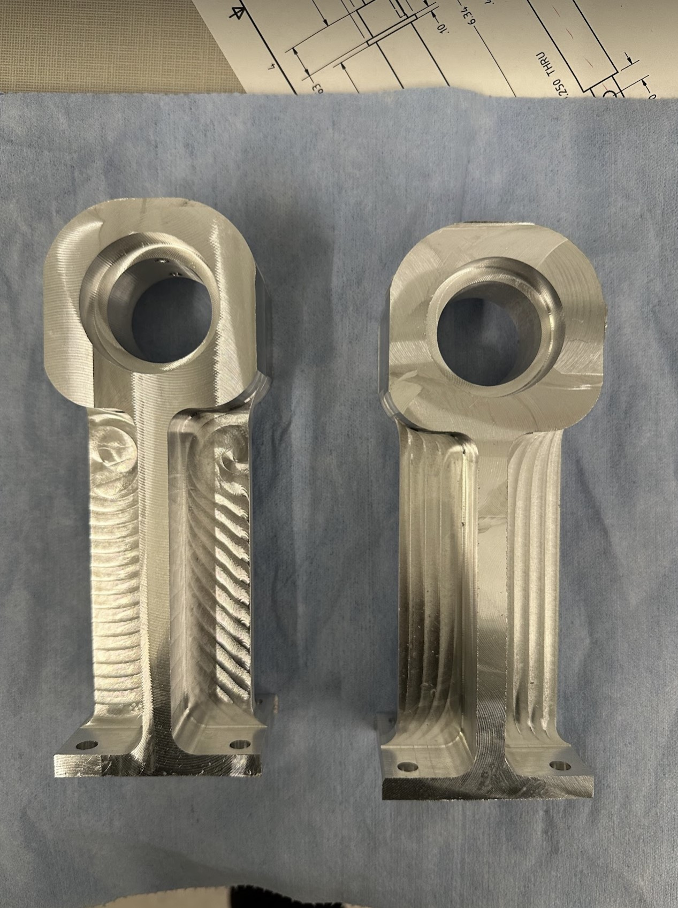

A collection of parts I machined in my time at Cornell. I have experience on the manual mill and lathe, Trak Mill, Trak Lathe, and Haas CNC.
 Rear Hub; manual mill prep+fixture followed by CNC  Differential gear support; manual + Trak mill  Front Inner Hub; manual mill prep+fixture followed by CNC  Front Outer Hub; manual lathe prep done by me, followed by CNC done by someone else (I was not trained yet)  Axle support blocks; manual mill prep followed by CNC